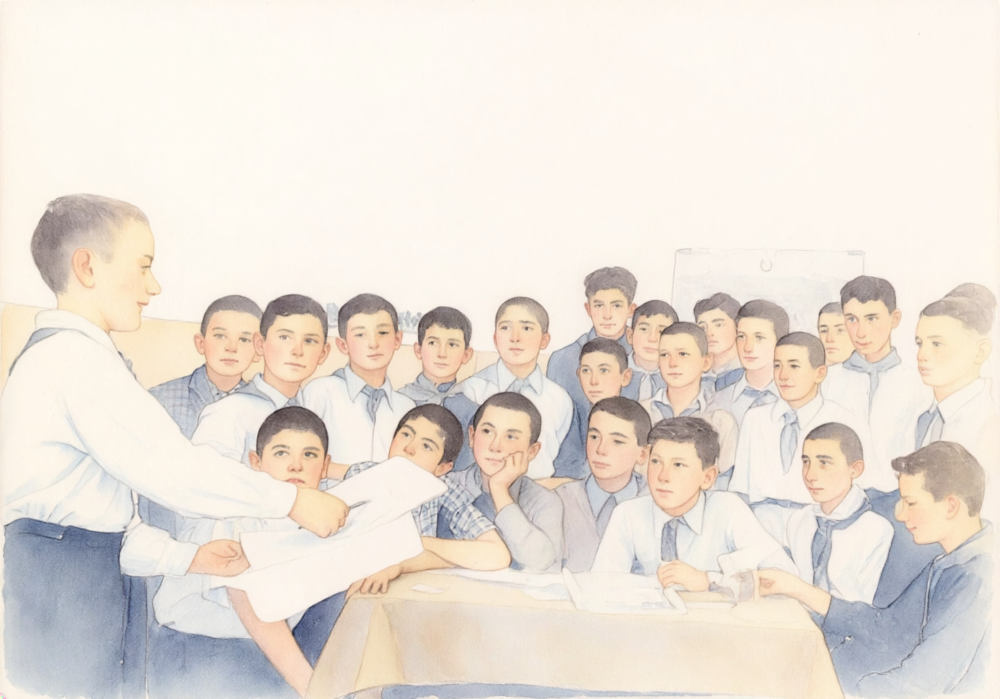

Childhood and School Years
Born in Tbilisi in 1939, Zviad Gamsakhurdia spent his childhood and school years in the Georgian capital and graduated from Tbilisi Secondary School No. 47 in 1957.
See More About His Childhood and School Years